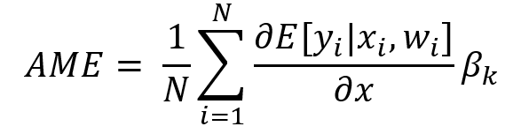
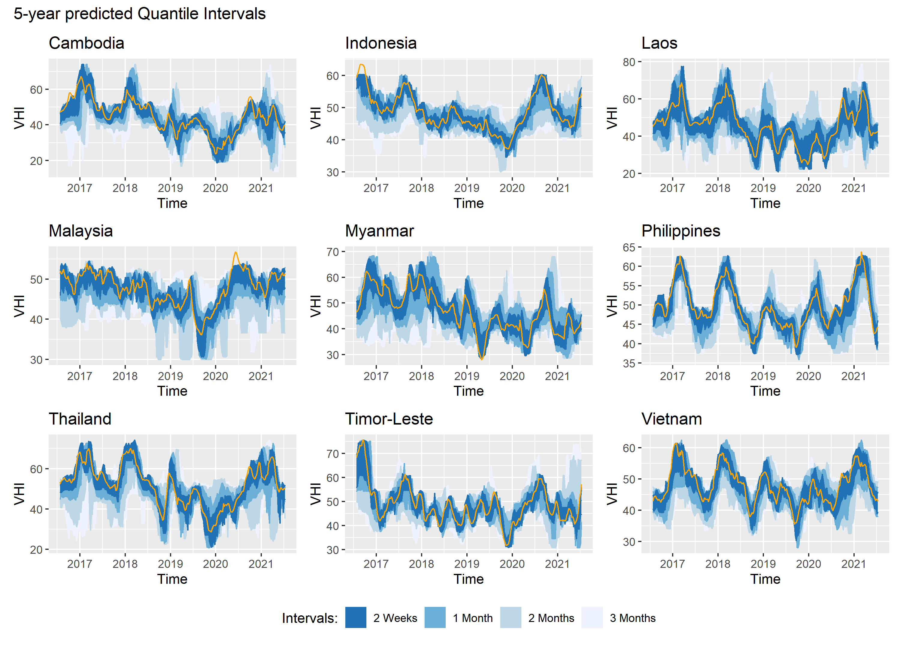
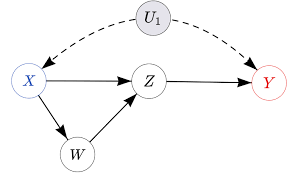
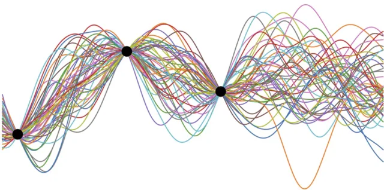

Ahmed T. Hammad
ℹ️ About
🧑🏫 Teaching
🛰 Research
🧑🎓 Students
✍ Papers
💡Solutions
🧰Toolkits
📃 CV
🎙️Blog
📽️️ Slides
📸 Gallery
Github
LinkedIn
Email
🎙️Blog
A Fresh Perspective on Treatment Effects - Beyond the Average and Into the Tails
In the field of econometrics, understanding the impact of interventions—whether they are policies, programs, or natural events—has traditionally focused on average treatment…
All About MLflow
Machine learning projects are full of experimentation and discovery. As data scientists, we test hypotheses, fine-tune models, and iterate endlessly to improve performance.…
Contextual Multi-Armed Bandit: Maximizing Rewards with Intelligent Decision-Making
Imagine a gambler facing a row of slot machines (arms), each with an unknown payout probability. The gambler’s goal is to maximize their cumulative reward while exploring…
Data Science Books
Whether you’re a seasoned data scientist looking to expand your knowledge or a newcomer eager…
Data Science project Boilerplate
A data science boilerplate, in the context of software development and data science projects, refers to a standardized and reusable set of code, templates, libraries, and…
Developing in a Docker container
Developing within a Docker…
Embracing Change: Incremental vs. Batch Machine Learning
Machine learning has revolutionized the way we interact with data, allowing us to uncover valuable insights and make informed decisions. Within the realm of machine…

Logistic Regression and Marginal Effects
Logistic regression is a widely used statistical technique for modeling the relationship between a binary outcome and one or more predictor variables. It is commonly…
Machine Learning, Copula and Synthetic Data
Copulas and synthetic data play pivotal…
Probability Box with Kernel Density Estimation
All those numbers in the weather forecast got me thinking about a simple table with historical data for temperature, humidity, and…

Quantile Random Forest
Quantile Random Forest (QRF) is an extension of the traditional Random Forest algorithm that estimates not only the mean but also the entire conditional distribution of the…
The 3 + 1 pillars of data science
A few weeks ago, one of my students posed a compelling question:
The Beauty of Soft Decision Trees
In this blog post I aim to introduce soft decision trees, highlighting their advantages over traditional decision trees. I will explain the key characteristics of soft…
Understanding Stationary: Concepts, Implications, and Approaches
Time series analysis is foundational in numerous fields, from economics and finance to engineering and the natural sciences. A time series is a sequence of observations…

Unraveling the Power of Causal Machine Learning
In the realm of traditional machine learning, we primarily focus on identifying patterns and correlations in data to make accurate predictions. While this approach is…
Updating knowledge with Bayes
To elucidate the workings of Bayesian updating, I often find it helpful to draw parallels…

When in doubt, just model it. Modelling uncertainty
Probabilistic modeling is a powerful approach in statistics and machine learning that enables us to quantify uncertainty in our predictions and decisions. It allows us to…
pbox: Exploring Multivariate Spaces with Probability Boxes
In a previous post I introduced the idea of a “probability box.” Well, after several intense months of hard work…
No matching items